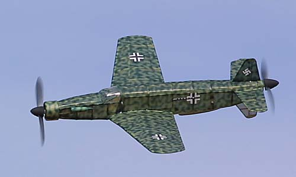
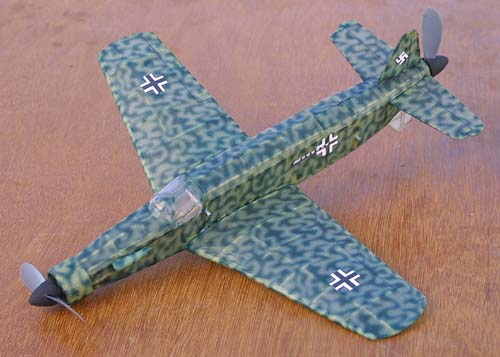

|
Tom is justifiably proud of this plans-built Dornier 335.
He designed the camoflauge on his computer using Freehand and Photoshop before printing on the tissue. The result is stunning. Tom usually flies the model with a single motor driving the forward propeller. We are trying to get Tom to carve a matched pair of props so that it can be flown on a single motor turning both props. |


Copyright 2001, Thayer Syme. All rights reserved